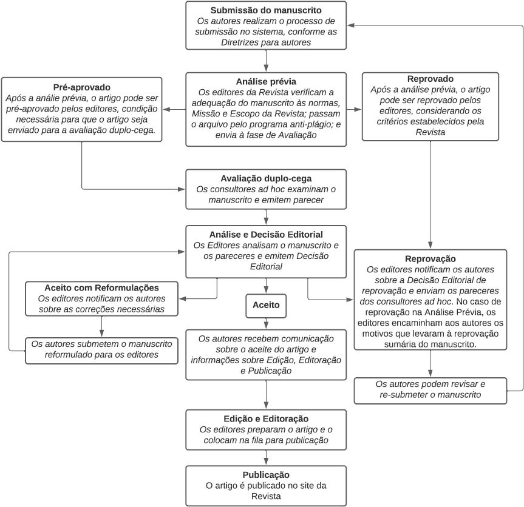

Acta Scientiarum. Education

 Acta Scientiarum. Education
Acta Scientiarum. Education
Publicação de: Editora da Universidade Estadual de Maringá - EDUEMÁrea: HUMAN SCIENCES

- Periódicos
- Acta Scientiarum. Education
- Instruções aos autores
Instruções aos autores
Como parte do processo de submissão, os autores devem verificar a conformidade da submissão em relação a todos os itens listados a seguir. As submissões que não estiverem de acordo com as normas serão devolvidas aos autores.
|
Fluxograma do processo de submissão, avaliação e publicação
 |
1 - Cadastro O cadastro no sistema e o posterior acesso, por meio de login e senha, são obrigatórios para a submissão de trabalhos, bem como para o acompanhamento do processo editorial em curso. Acesso em uma conta existente ou Registrar uma nova conta. 2 - Procedimentos e cuidados antes da submissão
3 - Instruções para submissão de artigos
4 - Referenciação bibliográfica
|
|
Para evitar conflitos de interesses e para assegurar a imparcialidade, no decorrer do processo de avaliação (cf Fluxograma), a identidade dos pareceristas e a dos autores são mantidas em sigilo. Após a verificação pela equipe editorial da adequação do manuscrito ao foco e ao escopo da Revista e do atendimento às normas informadas no site, os artigos são avaliados, aplicando-se o processo duplo-cego, ou seja, são avaliados por dois pareceristas externos à Revista. O manuscrito que recebe um aceite e uma rejeição, é encaminhado a um terceiro parecerista, também anônimo e externo à Revista. Os autores podem acompanhar o processo de avaliação das suas submissões no SEER, utilizando login e senha para o acesso. No ambiente destinado aos autores, é possível o acesso aos pareceres. É disponibilizada uma lista de diretrizes a serem examinadas pelos pareceristas que incluem os seguintes aspectos: originalidade do artigo; pertinência da discussão, dos dados informados, da interpretação, da metodologia e das referências citadas; clareza e adequação do título, do resumo, das palavras-chave, da introdução, do desenvolvimento e da conclusão. O aceite do artigo pode ser total ou condicionado às reformulações e às correções propostas pelos avaliadores e pelos editores. Modificações de estrutura e de conteúdo sugeridas no decorrer do processo de avaliação somente serão realizadas mediante a concordância dos autores. Essas orientações são seguidas tanto nas avaliações de artigos submetidos em fluxo contínuo, como na avaliação de artigos submetidos a chamadas temáticas. Solicitações de alterações e de reformulação Artigos aprovados O aceite do manuscrito não garante a sua imediata publicação. Uma vez aprovado, sua publicação respeitará os critérios de data de submissão e de localização geográfica das instituições de filiação dos autores. Com o objetivo de evitar a endogenia e de garantir a diversidade dos autores dos artigos publicados, somente após o intervalo de dois anos, este periódico publicará outro artigo do mesmo autor. |
O assunto tratado no artigo é relevante para ser veiculado pela revista? * O artigo é original? * O título reflete clara e suficientemente o conteúdo do artigo? * A apresentação, a organização e o tamanho do artigo são satisfatórios? * A introdução faz uma revisão sobre o tema abordado e deixa claro o objetivo do trabalho? * A discussão é pertinente e suficiente? * Os dados justificam as interpretações? * Há necessidade de acréscimo de algum item que possa enriquecer o artigo? * É necessário redução ou a retirada de alguma parte do artigo? * As ilustrações e tabelas são necessárias e pertinentes? * As figuras são ilustrativas e apresentam boa qualidade para reprodução? * As palavras-chave são adequadas ao artigo? * O resumo dá uma boa informação sobre o trabalho? * As referências são adequadas e necessárias? * As referências estão redigidas de acordo com as normas da revista? * Os autores referenciados no texto estão citados nas referências? * Foi feita alguma anotação no manuscrito? * A pesquisa envolve entrevistas ou estudo de caso? Verificar se os autores informaram a número do protocolo da aprovação do Comitê de Ética (Plataforma Brasil) *. Parecer quanto à publicação do artigo, entre: Anotações (se necessário): |
Política de Privacidade Os nomes e os endereços informados a esta revista serão usados exclusivamente para os serviços prestados para a publicação, não sendo disponibilizados para outras finalidades ou a terceiros. |